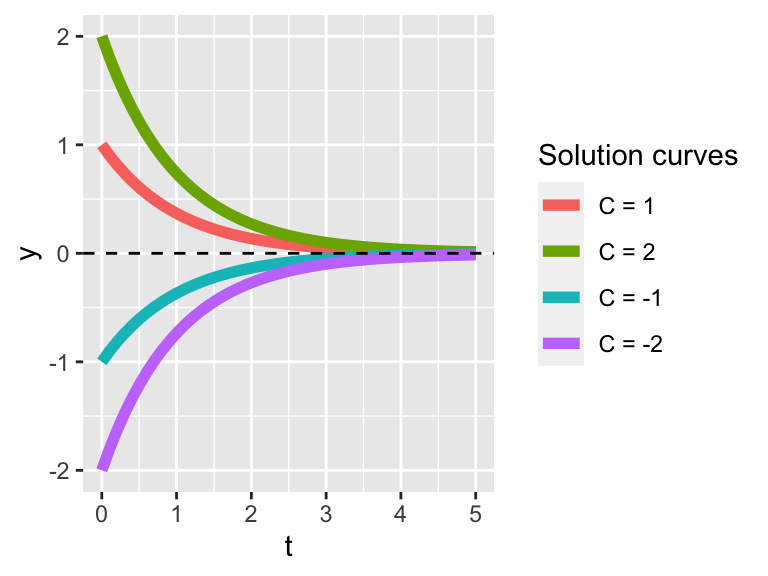
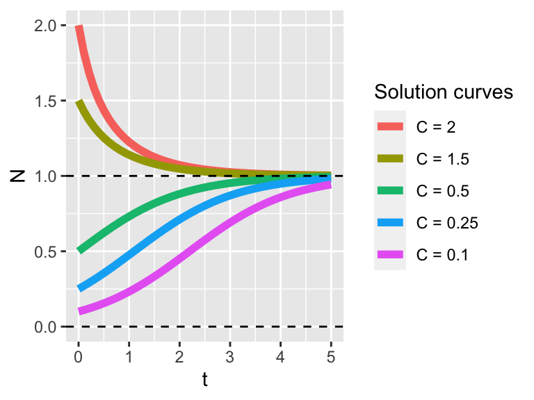

3.1 Equilibrium solutions
One key thing about the qualitative analysis is we are interested in the motion and the general tendency and the flow of the solution. Because there could be several possibilities about the flow, one very easy place is to examine where the is no flow - meaning the solution is stationary. Borrowing ideas from calculus, this occurs when the rate of change is zero.
For this example we know that when the rate of change is zero, this means that \(\displaystyle \frac{dy}{dt} = 0\), or when \(0 = -y\). So \(y=0\) is the equilibrium solution. This example does have a general solution is when \(y(t)=Ce^{-t}\), where \(C\) is an arbitrary constant. Figure ?? plots different solution curves, with the equilibrium solution shown as a horizontal line:

Notice how all solutions tend to \(y=0\) as \(t\) increases, no matter if the initial condition is positive or negative.
In this case the equilibrium solutions occur when \(N \cdot(1-N) = 0\), or when \(N=0\) or \(N=1\).
Given that the generic solution to this differential equation is \[ \displaystyle N(t)= \frac{N_0}{N_0 +(1-N_0) e^{-t}}.\] Figure @ref(fig:logistic_soln) displays several different solution curves.

As with the previous figure, notice how all the solutions tend towards \(N=1\), but even solutions that start close to \(N=0\) seem to move away from this equilibrium solution. This brings us to understanding classifying the stability of the equilibrium solutions.